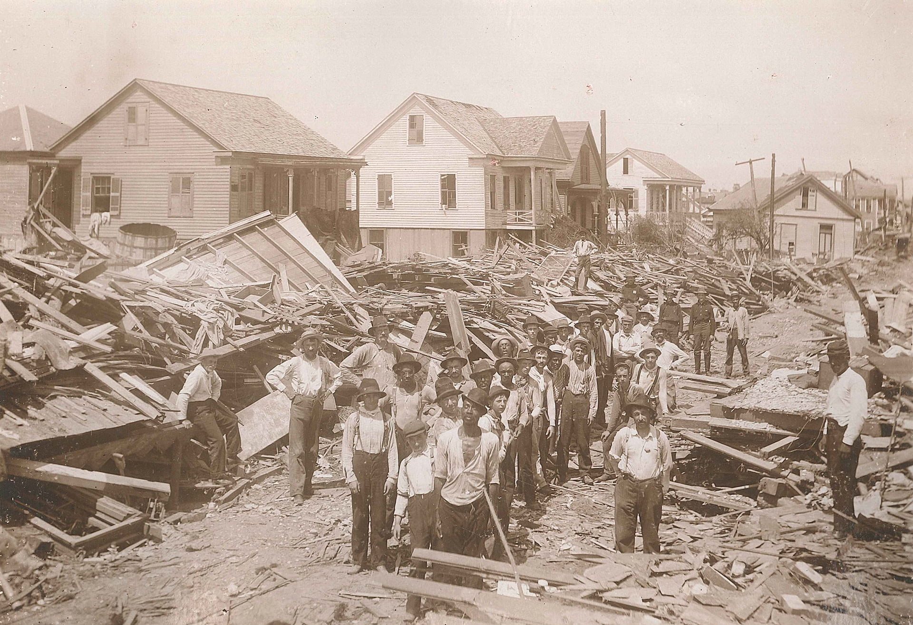
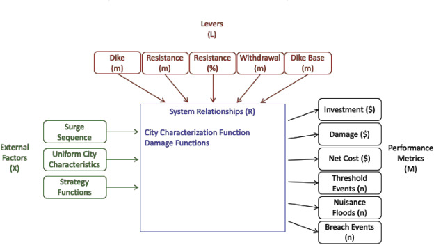
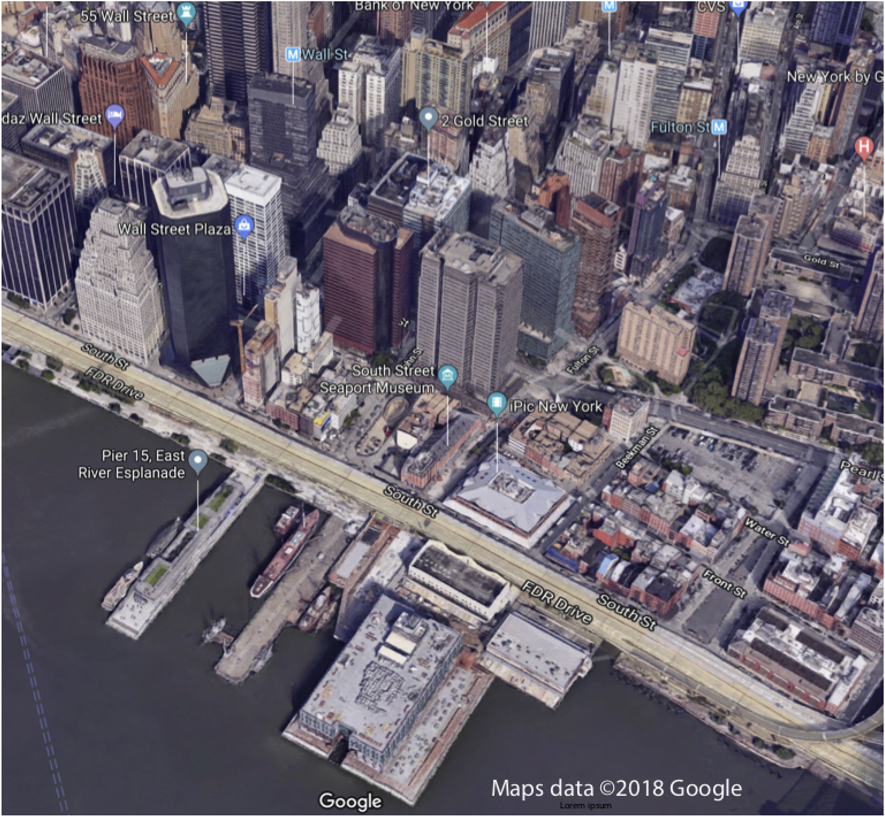
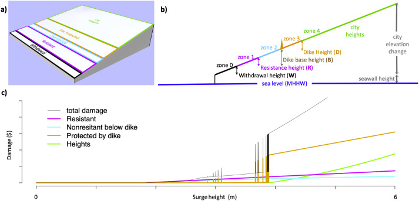

Paper Discussion
Wednesday, February 4, 2026

September 8, 1900: Category 4 hurricane, 8,000+ deaths
The response:
The question: Build a wall? Raise the land? Retreat? All three?
ICOW = Island City On a Wedge (Ceres et al., 2019)
Key insight: You don’t need every street corner—just the right abstraction.

ICOW takes city geometry + defense choices → computes expected damages. Source: Ceres et al. (2019)
Today
The Wedge Geometry
The Economics
Activity: Map Your City

What do coastal cities share?

The wedge geometry captures essential features. Source: Ceres et al. (2019)
If water reaches Zone 4—what’s the damage?
→ Three zones underwater (large fraction of city value)
If water reaches Zone 3?
→ Zero… unless the dike fails
What happens when dikes fail?
| Parameter | Symbol | Meaning |
|---|---|---|
| Maximum elevation | \(H_{\text{city}}\) | How high does the city rise? |
| City depth | \(D_{\text{city}}\) | How far inland does the city extend? |
| Coastline length | \(W_{\text{city}}\) | How long is the waterfront? |
| Seawall height | \(H_{\text{seawall}}\) | Existing protection height |
From the paper (Manhattan): \(H_{\text{city}} \approx 17\) m, \(D_{\text{city}} \approx 2\) km, \(W_{\text{city}} \approx 43\) km
Do these seem reasonable? (We’ll check in the activity.)
| Lever | What it does | Real-world example |
|---|---|---|
| Withdrawal (\(W\)) | Vacate low-lying land | Managed retreat, buyouts |
| Dike Base (\(B\)) | Where the wall starts | Seawall location |
| Dike Height (\(D\)) | How tall the wall is | Seawall height |
| Resistance Height (\(R\)) | Flood-proof buildings | Elevating structures |
| Resistance Fraction (\(P\)) | What % of buildings | Retrofit programs |
The key constraint: \(W + B + D \leq H_{\text{city}}\)
You can’t withdraw past the city limits, and you can’t build a dike taller than the land behind it.
Today
The Wedge Geometry
The Economics
Activity: Map Your City
Simple models say: flood = total loss, no flood = zero.
Reality: A 1-foot flood ruins your carpet. A 10-foot flood destroys the structure.
ICOW computes damage based on volume flooded:
\[\text{Damage} = \text{Zone Value} \times \frac{\text{Volume Flooded}}{\text{Total Volume}} \times 0.39\]
The 0.39 is an empirically-derived depth-damage parameter: the fraction of zone value destroyed at full inundation (from flood damage curves).
This connects to Monday’s EAD formula (Week 4 lecture)—but now we can compute damage for any surge height.
A dike doesn’t magically hold until overtopped, then fail.
Fragility curve: Failure probability ramps up as water approaches the crest
The levee effect: People behind dikes often don’t evacuate. If the dike fails, they’re caught off guard. ICOW models this: damage behind a failed dike is 1.3× worse than open flooding.
Today
The Wedge Geometry
The Economics
Activity: Map Your City
Work in pairs. Use Google Maps to estimate ICOW geometry parameters for a real coastal city.
You’ll need:
Before we look anything up—take 30 seconds:
Which city do you think has the steepest geometry? (highest \(H_{\text{city}}/D_{\text{city}}\) ratio)
Write down your guess. We’ll check later.
| Parameter | How to Estimate |
|---|---|
| \(H_{\text{city}}\) | Elevation change: waterfront → highest urban point |
| \(D_{\text{city}}\) | Horizontal distance: waterfront → highest point |
| \(W_{\text{city}}\) | Length of exposed coastline |
| \(H_{\text{seawall}}\) | Existing protection height (search online) |
Tools: Google Maps terrain view, Google Earth elevation, Wikipedia
You’ll need all four parameters for Friday’s lab!
Pair up with a table that studied a different city:
Class discussion: A steep city vs. a flat city—who benefits more from a 3m dike?
Friday we’ll implement single-year EAD analysis:
Rotterdam is 6 meters below sea level.
How does ICOW even work there?
(We’ll find out Friday.)
James Doss-Gollin